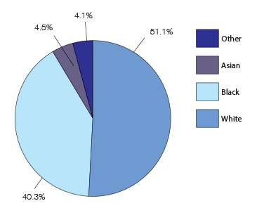

Public Safety and Justice Report by Ward
Ward 6

Alan, a resident in the Capitol Hill neighborhood, says he was attacked and mugged 7 years ago on his way home from a local bank. Alan was biking home when he was approached by two teenagers, both of whom broke his jaw, stole his wallet, and attempted to steal his bike. Aside from this incident, Alan says his neighborhood has been a safe place to live and feels that local police are quick to respond. He also says that his family’s encounters with crime in the neighborhood have been “mostly in the past,” including car theft, which Alan says has lessened since he and his wife moved to Capitol Hill 20 years ago.
Graphs & Statistics
Race
Demographic Statistics
- Income
- Average family income 2011 to 2015: $140,853
- 81% employment rating
- The average amount of people on food stamps: 15,155
- Education
- 90% of residents obtaining at least a high school education
- Percentage of people with a bachelor's degree or higher increased by 4%
- Poverty
- From 2011 to 2015, poverty rate was 17%
Crime Statistics
- Violent Crime
- Naval Yard Shooting - 2013
- Responsible for 12-14% of violent crime in DC
- Property Crime
- Highest amounts of property crimes: 5,280 offenses
- Ward 6 saw an increase in theft